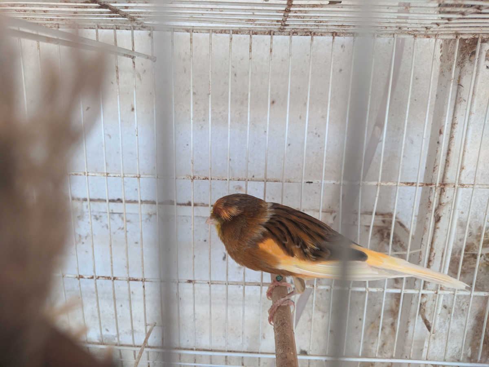

Início do Criatório Talizin
O criatório talizin começou em 1998, com a compra do 1º casal de canários de porte, e fui participando de torneios conseguindo alguns campeões, mas em 2005 comecei a estudar Administração de Empresas e não tive mais tempo para a criação, acabando com todas as aves em 2007, em 2012 iniciamos novamente a criação de canários Yorkshire. Hoje o Criatório é composto por 20 casais para a reprodução, buscando o padrão desejado.

Canários
Hoje o criatório Talizin é especializado em canário Yorkshire.
